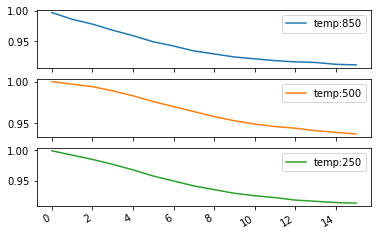
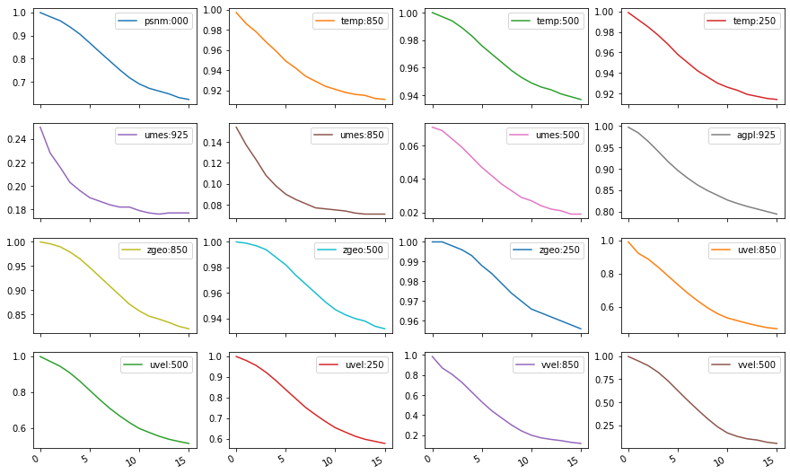

Explorando os dataframes
Dataframes do Pandas são estruturas de dados tabulados que possuem uma série de funções e métodos que podem também ser aplicados com as tabelas do SCANTEC. Veja nos exemplos a seguir, diferentes formas de selecionar as colunas e plotar os dados de forma individual ou agrupada.
No exemplo abaixo, é feita a seleção da coluna referente à correleção de anomalias da temperatura absoluta em 850 hPa. Para isso, utiliza-se o método loc para fazer a localização da variável no dataframe. O método loc em um dataframe do Pandas indexa os valores da tabela a partir dos índices da linha e da coluna, respectivamente (loc[linha,coluna]):
1 | |
1 2 3 4 5 6 7 8 9 10 11 12 13 14 15 16 17 | |
O dataframe do Pandas permite também realizar a plotagem rápida da seleção realizada utilizando a função plot(). Veja no exemplo a seguir:
1 | |
Com o método loc, é possível também escolher mais do que uma coluna. Veja o exemplo a seguir e compare-o com o exemplo anterior:
1 | |

O método loc realiza a indexação a partir dos rótulos das colunas. Utilize o método iloc para realizar a subseleção a partir dos índices das linhas e colunas:
1 | |
Quando múltiplas colunas são selecionadas, pode-se optar pela plotagem em grupo. Para isso, basta passar o argumento subplots=True para dentro da função plot():
1 | |

Veja a seguir o mesmo exemplo anterior, mas utilizando o método iloc:
1 | |

Outras opções de plotagem com o Matplotlib podem ser passadas também para a função plot(), veja a seguir:
1 | |

Com mais do que um experimento, é possível também plotá-los no mesmo gráfico. Veja a seguir como plotar duas colunas de dois dataframes diferentes (ie., duas tabelas do SCANTEC), no mesmo gráfico:
1 2 3 4 | |